IShowSpeed × AFCON Final
The mascot reveal at the AFCON Final. A creator integration at state level, delivered end to end by AToure, and one of the most watched creator moments of 2026.
- Case study
- AFCON 2025
- Brand
- CAF / FRMF
- Creator
- IShowSpeed
- Market
- Morocco
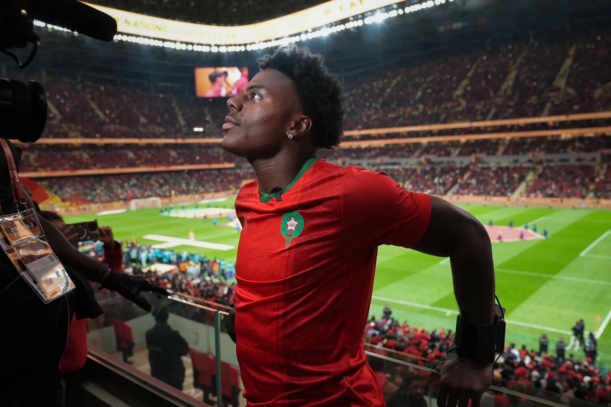
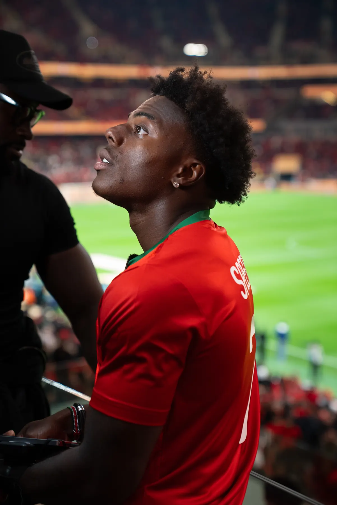
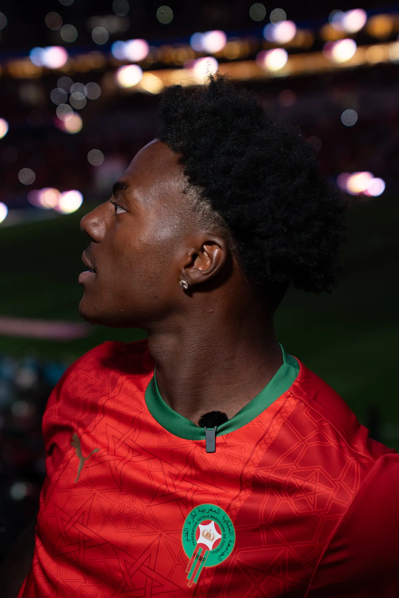
In partnership with
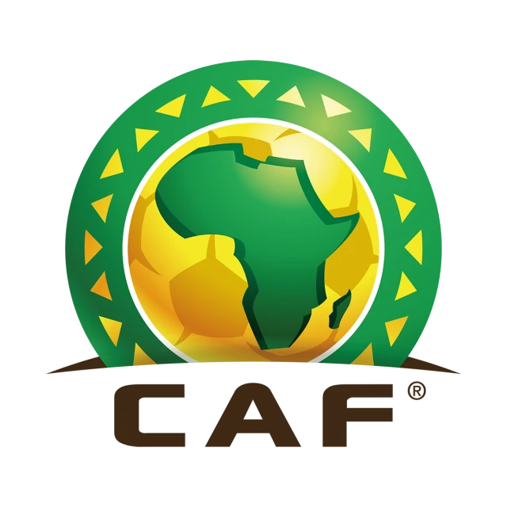
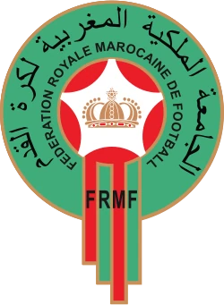
- Confederation of African Football
- Royal Moroccan Football Federation
- 16M
- Live stream views
- +300K
- Subscribers in 24h
- #1
- Most watched live, Africa tour
- #10
- Most watched broadcast ever
The brief
A global creator. Africa’s biggest stage.
CAF and the Royal Moroccan Football Federation wanted to integrate a global creator into the AFCON 2025 Final to amplify the tournament’s reach into Gen Z globally. They needed a partner who could execute it at the highest level. They came to AToure.
What AToure did
Conceived, negotiated, and delivered.
The mascot concept
AToure conceived the idea to appoint IShowSpeed as the official AFCON mascot “Assad”. CAF and the Royal Moroccan Football Federation reviewed and signed off, but the concept was ours.
State access
Secured state visas, official border clearances, and private jet clearances for the full team. VIP pickup from the private terminal in Rabat.
Permits and equipment
Obtained all filming permits, equipment permits, and drone access permits across Morocco: every credential needed to operate at the Final.
Security
Arranged both private security and state security mobilisation for the entire tour, from Casablanca to the AFCON Final in Rabat.
Accommodation
Placed the full team at the top hotel in Rabat. Managed all hospitality, transport, and logistics from arrival through the Final.
The Final
Secured IShowSpeed’s entry to the AFCON Final and coordinated the live mascot reveal, the moment that drove 16M views.
The result
One of the most watched creator moments of 2026.
- 6.1B
- Digital impressions for the tournament, an AFCON record
- 5.2B
- Video views across the tournament
IShowSpeed’s mascot reveal at the AFCON Final
The stadium erupted as Speed was unveiled as Assad the lion. The moment went viral across Africa and globally, driving a record 6.1 billion digital impressions and 5.2 billion video views for the tournament, numbers never seen before in AFCON history.
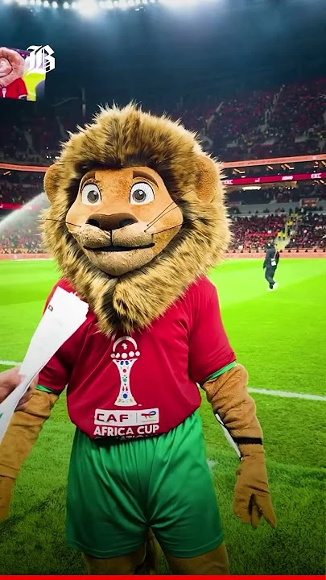
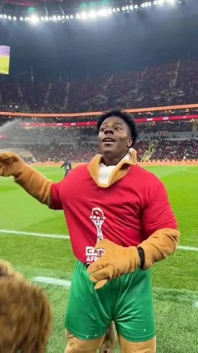
Broadcast and streaming
- Live stream views16 million
- Most watched live of Speed’s entire Africa tour#1
- Most popular broadcast of Speed’s entire career#10
- Final match TV audience97.3 million
- Tournament cumulative viewership (TV + digital)3.45 billion
Global media coverage
“One of the most shocking incidents of the final”Times of India
“Fans erupted in cheers”The New Arab
“Turned the final into a viral spectacle”Standard Media
Photography
On the ground in Morocco.
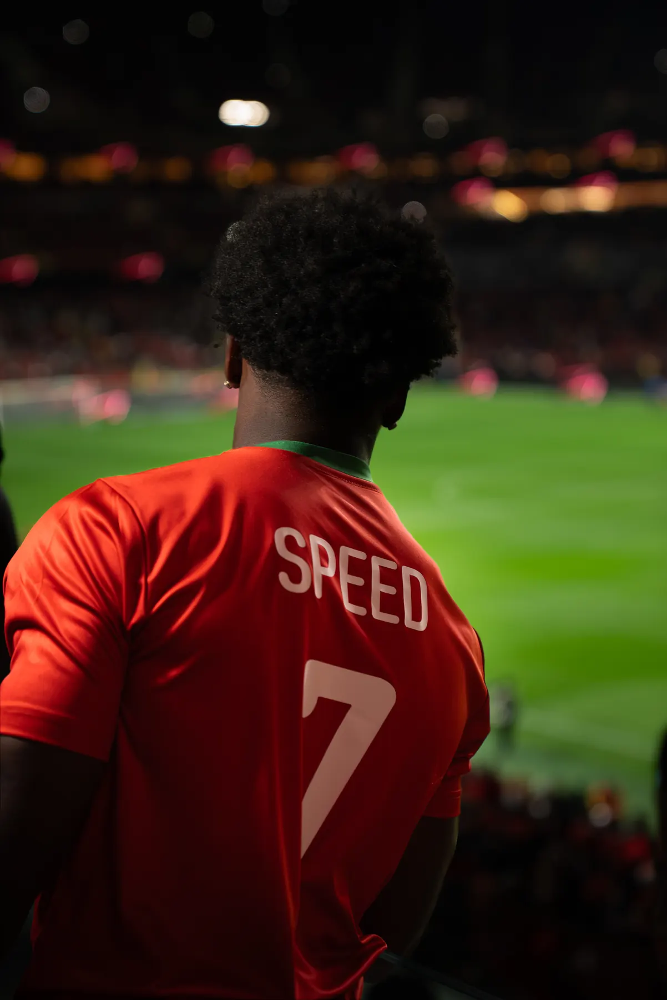
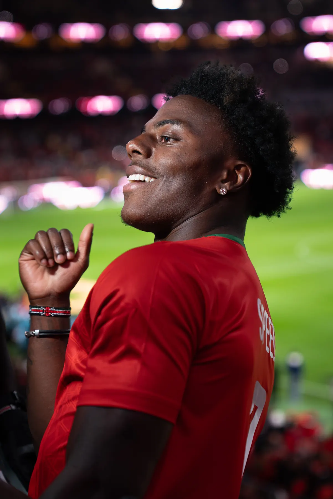
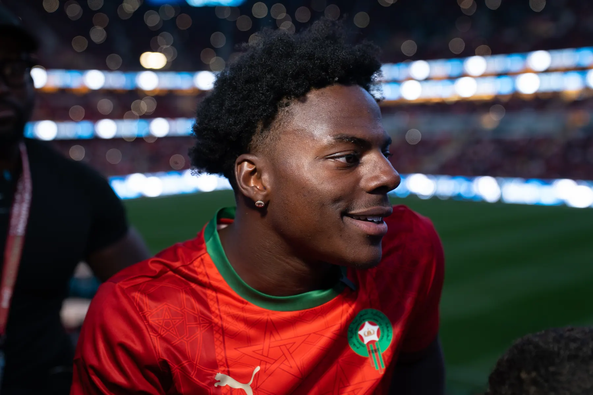
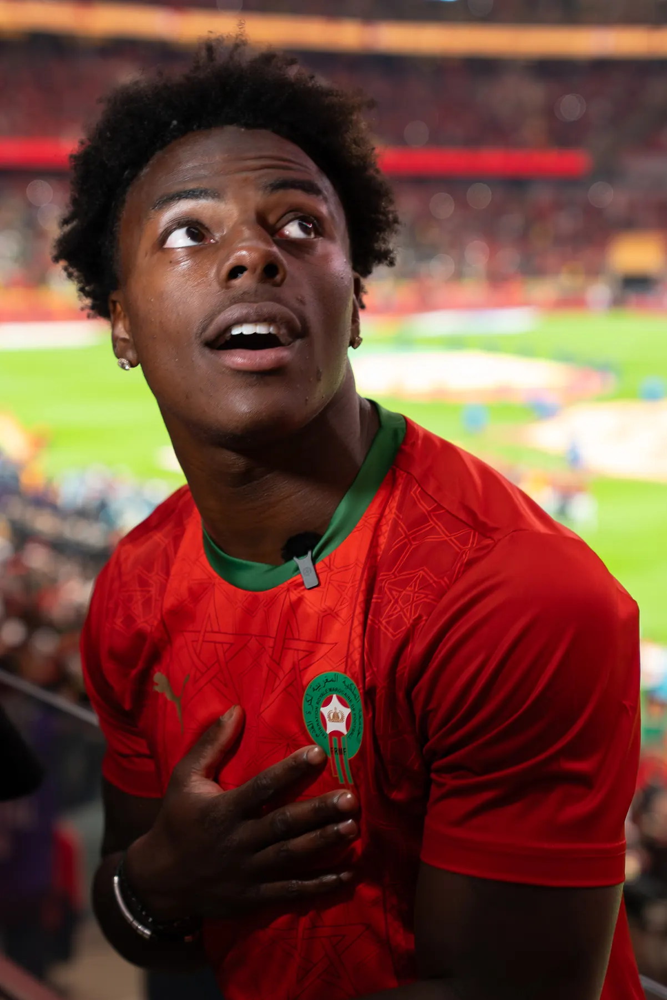
IShowSpeed at AFCON.
Campaign film
Behind the scenes and on the ground: IShowSpeed at the Africa Cup of Nations Final, Morocco 2025. A creator moment that bridged football and digital culture on Africa’s biggest stage.
- Rabat, Morocco
- Where
- AFCON Final 2025
- When
- 16M views
- Live stream
Key outcomes
The numbers speak for themselves.
- 6.1B digital impressions, an AFCON record
- +300K subscribers for Speed in 24h
- #1 trending in Morocco and Senegal
- State level diplomatic facilitation
- 97.3M TV viewers, final match
The integration successfully bridged traditional sports broadcasting with creator content, positioning IShowSpeed as a central figure in one of Africa’s biggest sporting events and delivering unprecedented Gen Z engagement for CAF and FRMF. AToure handled every stage, from the original concept to the final broadcast.
All figures verified from official broadcast and platform data: YouTube Analytics, CAF report, media audit.
Related work
IShowSpeed Africa Tour: Ivory Coast →
Next case study